Sprint 5 Windows
Monitorización
CPU
Qué muestra:
-
Todos los procesos activos y el porcentaje de CPU que consumen.
-
Subprocesos y servicios asociados a cada proceso.
-
Estadísticas como el tiempo de CPU, el número de hilos o el ID de proceso (PID).
Explicación:
-
CPU (%): muestra qué proporción del procesador utiliza cada proceso. Si un proceso consume más del 80-90% durante mucho tiempo, puede indicar una sobrecarga o un error.
-
PID (Process ID): número único que permite identificar un proceso en otras herramientas como el Visor de eventos o PowerShell.
-
Nombre del proceso: útil para identificar aplicaciones conocidas (Chrome, Word) o sospechosas (ej: "svchost.exe" con comportamiento inusual).
Memoria (RAM)
Qué muestra:
-
Cantidad de memoria utilizada por cada proceso.
-
Estado de la memoria física: libre, en uso, en espera, etc.
-
Tamaño del archivo de paginación (swap) y errores de acceso a memoria.
Explicación:
-
Memoria en uso: memoria que realmente está utilizando un proceso en ese momento.
-
Memoria en espera: datos que pueden ser reutilizados rápidamente por Windows si es necesario.
-
Memoria disponible: suma de memoria libre y en espera.
-
Memoria virtual: combina la RAM física con el archivo de paginación en disco. Si se usa mucho, puede indicar falta de RAM física.
Disco
Qué muestra:
-
Procesos que acceden al disco duro (lectura/escritura).
-
Bytes leídos/escritos por segundo.
-
Tiempo de respuesta y latencia de los discos.
-
Archivos concretos en uso.
Explicación:
-
Lectura/escritura (B/s): indica si hay procesos leyendo o escribiendo mucho en disco.
-
Tiempo de respuesta (ms): tiempo que tarda el disco en responder a una petición. Más de 20-30 ms de manera constante puede indicar un problema de rendimiento.
-
Cola de disco: si es muy alta, el disco no puede procesar todas las peticiones y el sistema se ralentiza.
Red
Qué muestra:
-
Aplicaciones que están enviando o recibiendo datos por la red.
-
Puertos de comunicación e IPs remotas.
-
Número de bytes por segundo (Tx y Rx).
Explicación:
-
Utilización de red (%): mide la carga de la conexión de red.
-
Puertos locales/remotos: puedes ver si una aplicación usa el puerto 80 (HTTP), 443 (HTTPS), 21 (FTP), etc.
-
IP remota: permite ver con qué servidor o destino se comunica la aplicación.
-
Conexiones activas: útil para detectar conexiones sospechosas o no deseadas.
Practico
Pulsamos Ctrl + Shift + Esc para abrir el Administrador de tareas
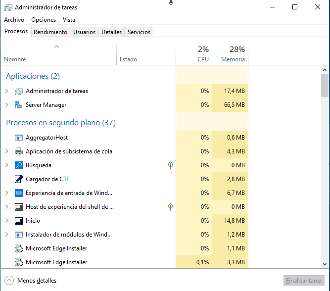
En el administrador de tareas tendremos el gasto de recursos de todos los servicios/aplicaciones del dispositivo, tambien podremos verlo dividido por usuario etc...
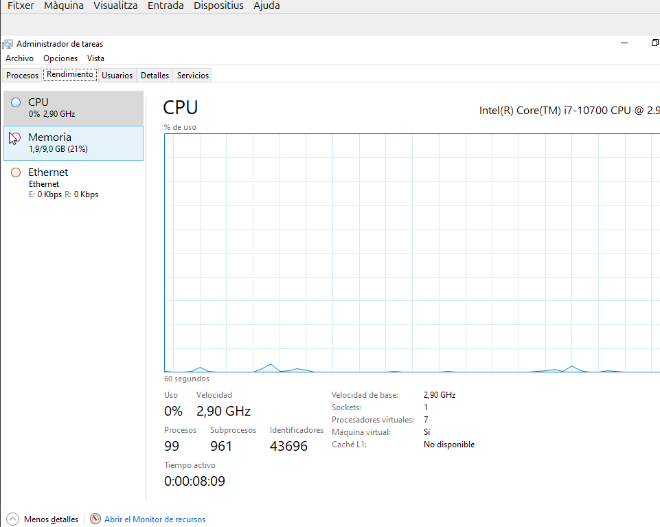
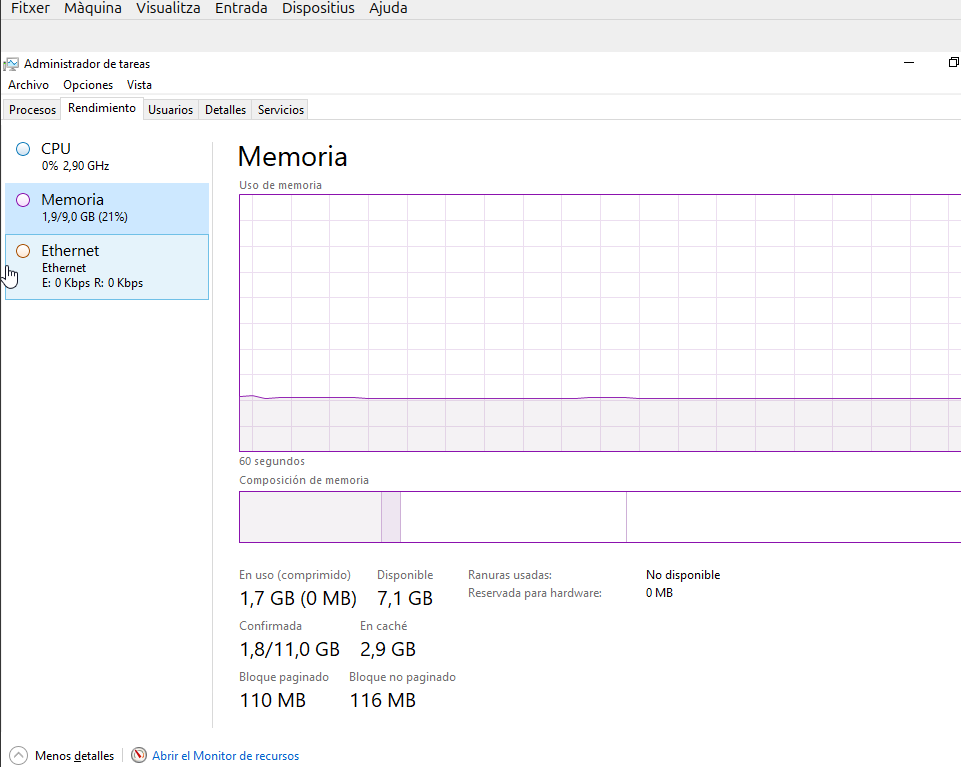
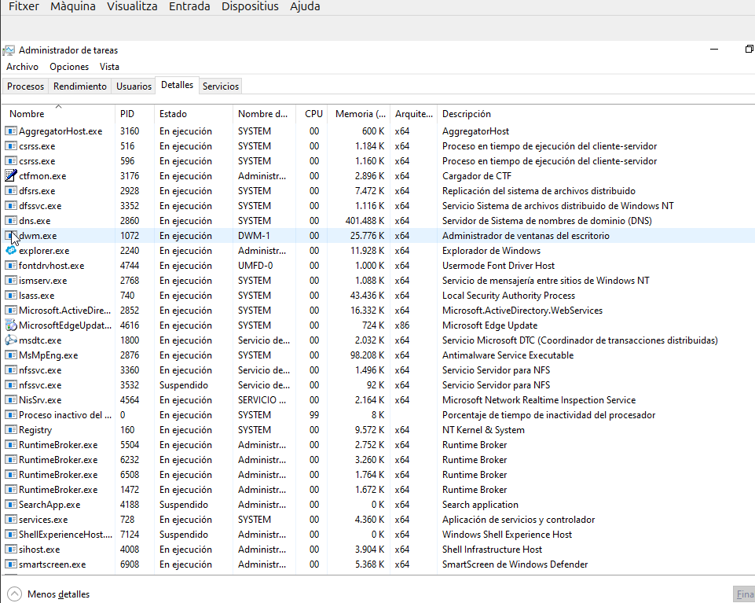
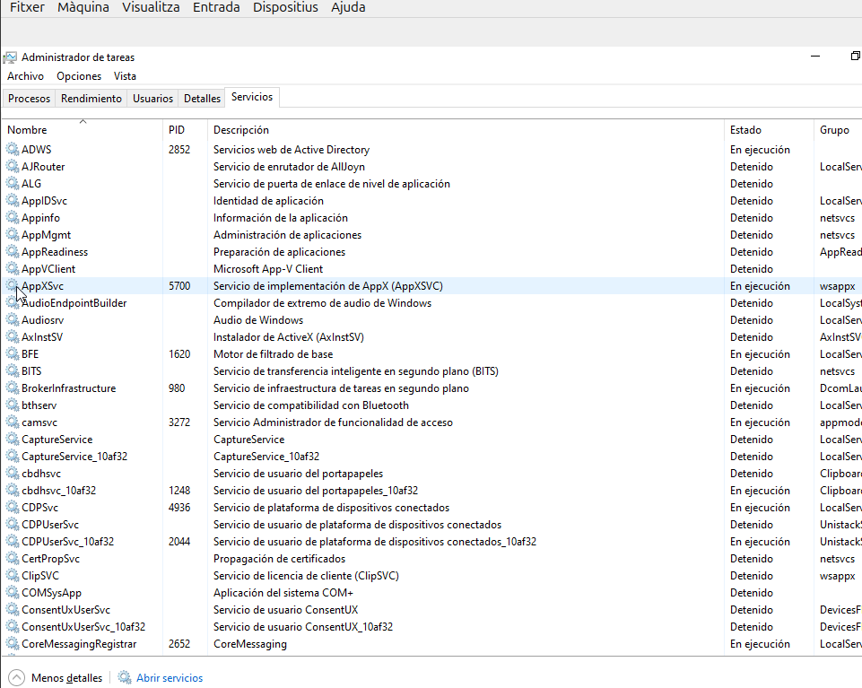
Tambien tenemos otra herramienta de monitorización que es el "monitor de recursos" en el que podremos ver de manera mas detallada el estado de servicio/aplicacion.
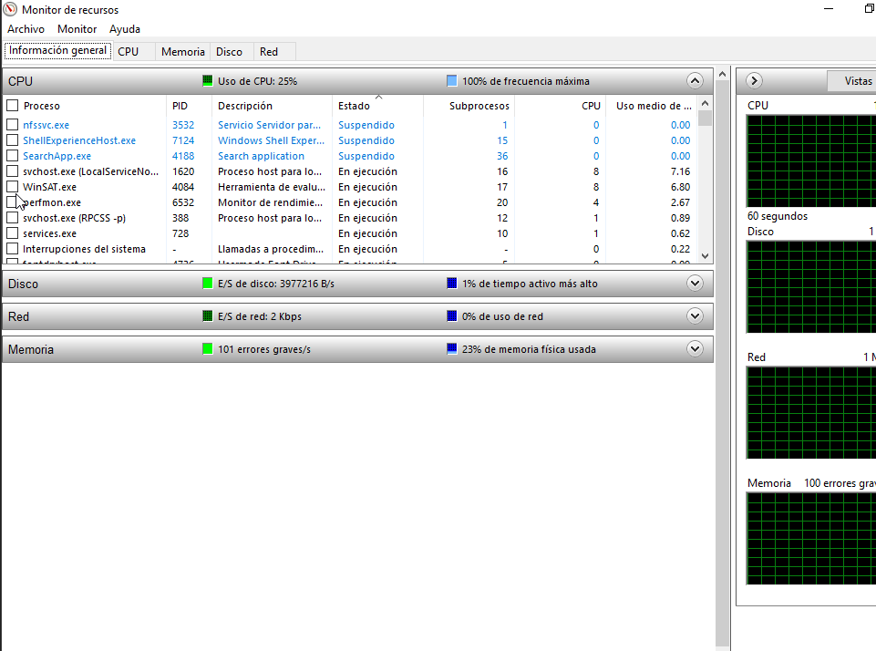
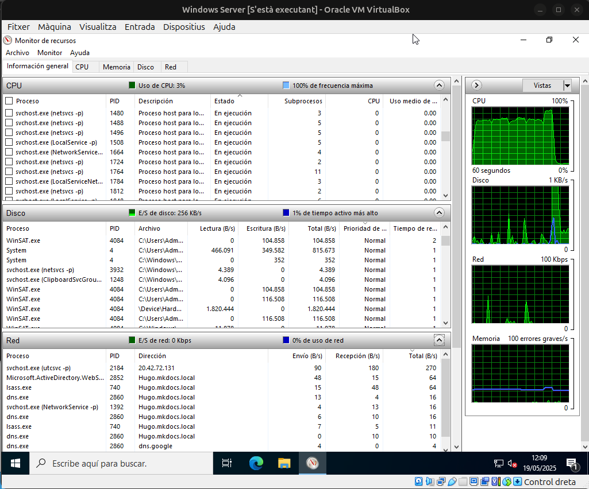
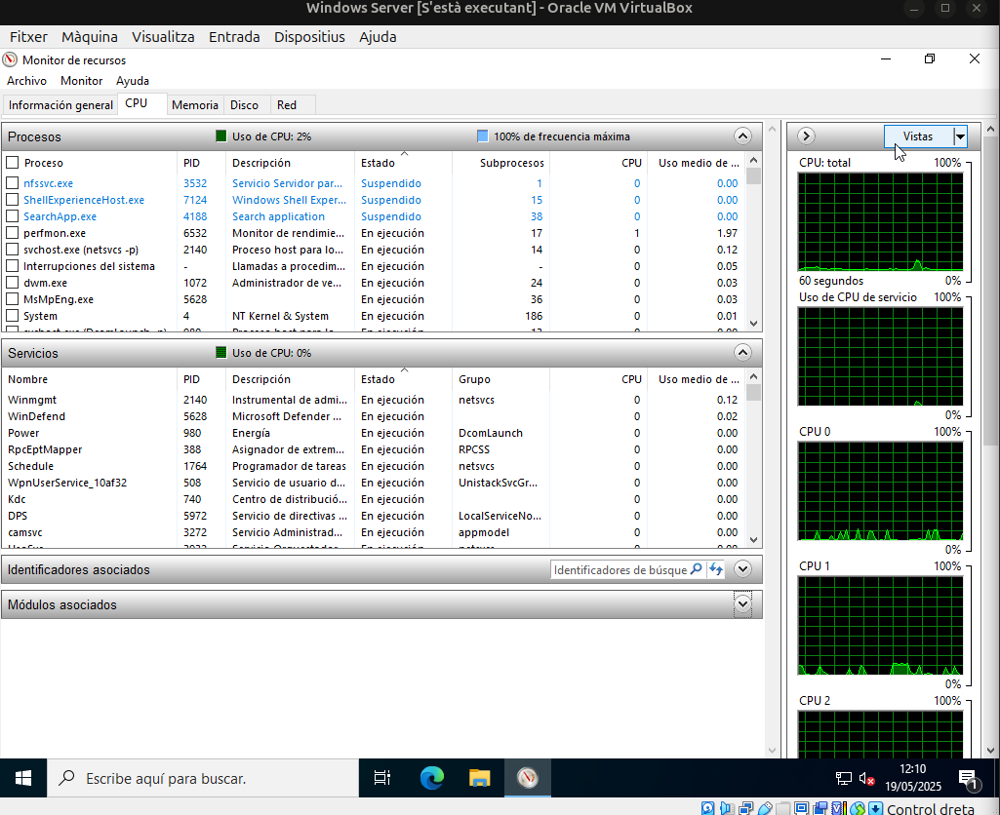
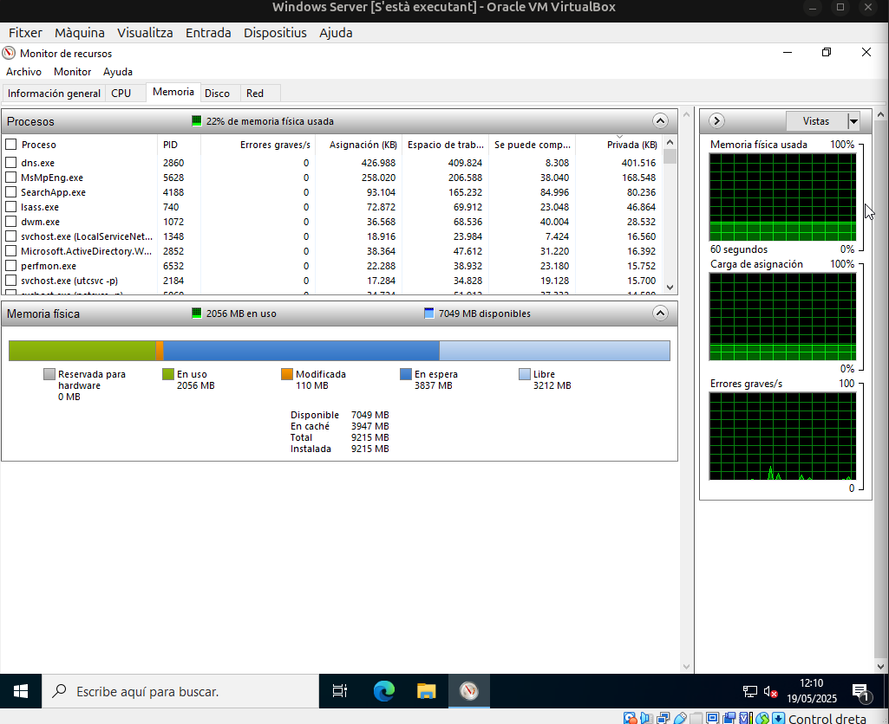
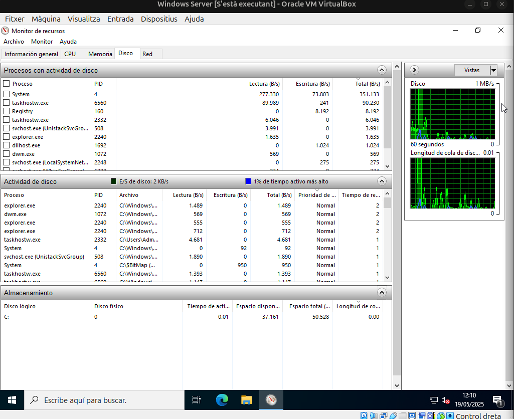
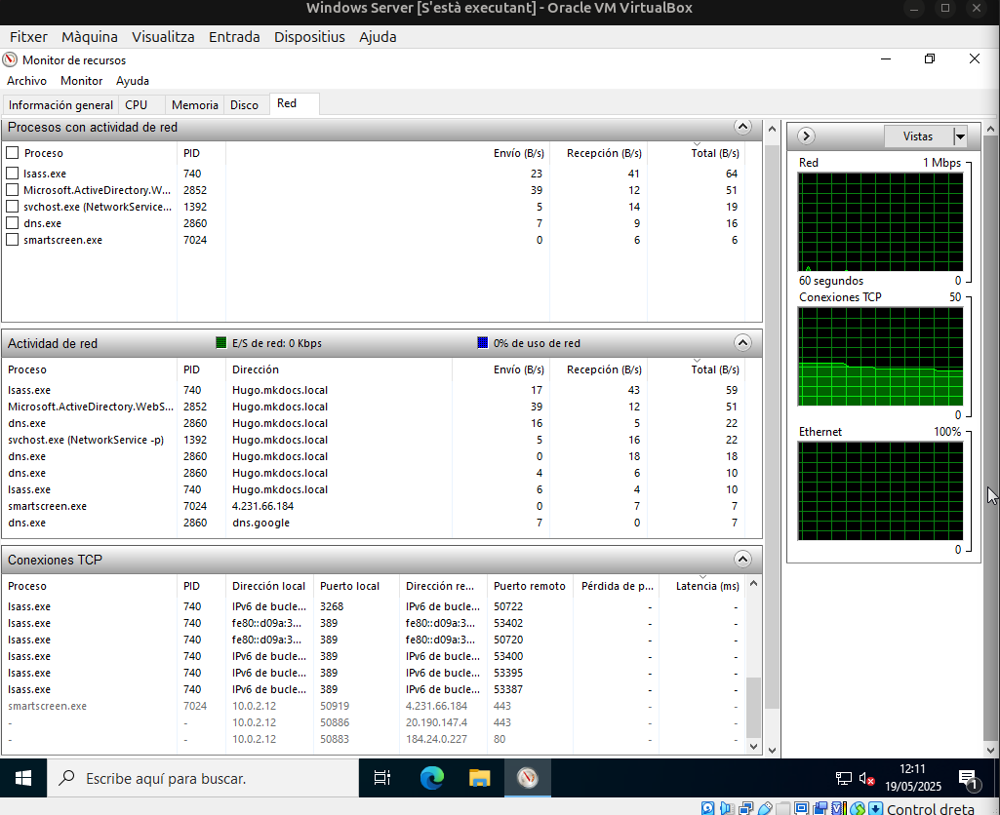